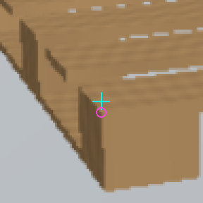

SYN native witness / D / 정답 / 모집단 1273

sample 0: V183_SELF_0000_NATIVE0_NOMINAL
CONTROL D, TREAT D. 원본96 crop

좌표·라벨·점수
{
"family": 0,
"target": 0,
"treatment_correct": true,
"bucket_index": 0,
"population": 1273,
"sample_index": 0,
"diagnostic": {
"row_id": "V183_SELF_0000_NATIVE0_NOMINAL",
"family": "SYN_NATIVE_WITNESS0",
"family_code": 0,
"source_index": 0,
"original_global_index": 0,
"component_id": "3543026ba3aa467c9a5ec62ebe5269e267dc161f988c9a8f51dea64a00430341",
"original_component_role": "TRAIN",
"internal_source_role": "INTERNAL_SOURCE_DEV",
"fit": false,
"native_slot": 0,
"query_xy": [
158.31256103515625,
286.2474060058594
],
"L": 79.04525375366211,
"original_query_available": true,
"target": 0,
"original_state": "D",
"target_alone_state": "D",
"region_state_context_only": "D",
"reference_xy_GT_diagnostic_only": [
158.33411370826204,
290.6816082707628
],
"q_reference_distance_px_diagnostic_only": 4.434254643544137,
"reference_locality_diagnostic_only": {
"original_input_available": true,
"original_input_U_preserved": false,
"raw96_reference_index_xy": [
47.5261755958758,
52.885312807740945
],
"inside_sample_center_extent": true,
"inside_crop_canvas_extent": true,
"inside_original_frame_canvas_extent": true,
"not_coordinate_error_correction_or_pixel_visibility_proof": true
},
"source_teacher_key": [
0,
0
],
"target_exclusion_reasons": [],
"available": true,
"central4": true,
"valid_fractions": [
1.0,
1.0
],
"validity_basis": "EXACT_STORED_INPUT_VALID96",
"sample_index": 0,
"pixel_sha256": "76a880c50a79b2f647a6ee72255af54d31c7a8911608ce1db4b8288c7112b40e",
"valid_sha256": "f9de1ef79c9d385cf14b1a1b1fd761391f3e985ce004b1a5942cb94a9275ba17"
},
"control": {
"sample_index": "0",
"row_id": "V183_SELF_0000_NATIVE0_NOMINAL",
"family": "0",
"role": "DEV",
"available": "True",
"target": "0",
"logit0": "-8.088714599609375",
"logit1": "-1.5363621711730957",
"selected_family_logit": "-8.088714599609375",
"prediction": "D"
},
"treatment": {
"sample_index": "0",
"row_id": "V183_SELF_0000_NATIVE0_NOMINAL",
"family": "0",
"role": "DEV",
"available": "True",
"target": "0",
"logit0": "-8.909749031066895",
"logit1": "-2.651810884475708",
"selected_family_logit": "-8.909749031066895",
"prediction": "D"
},
"raw_png": "CASE_00_RAW96.png",
"overlay_png": "CASE_00_OVERLAY.png"
}